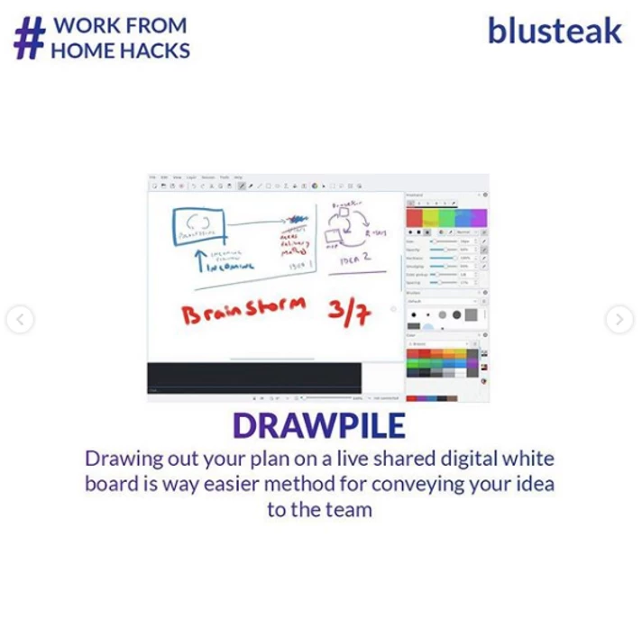
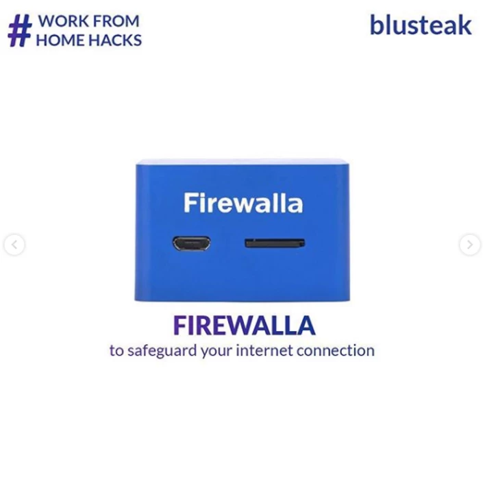
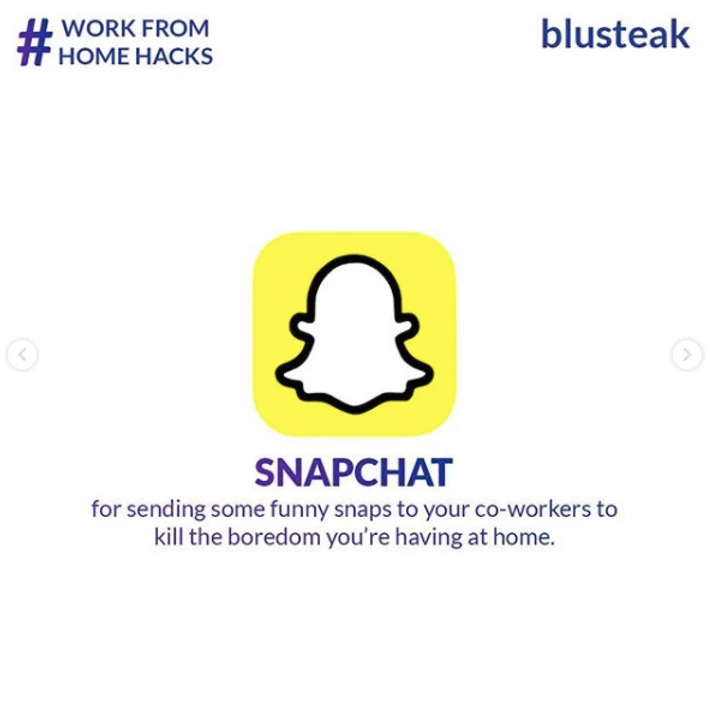
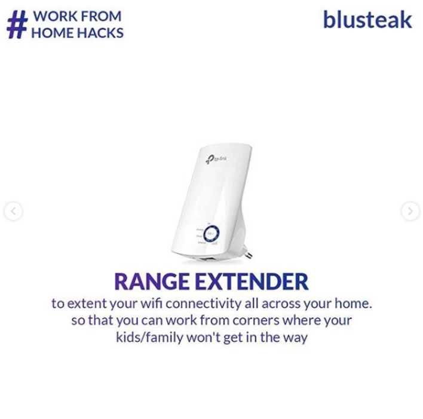
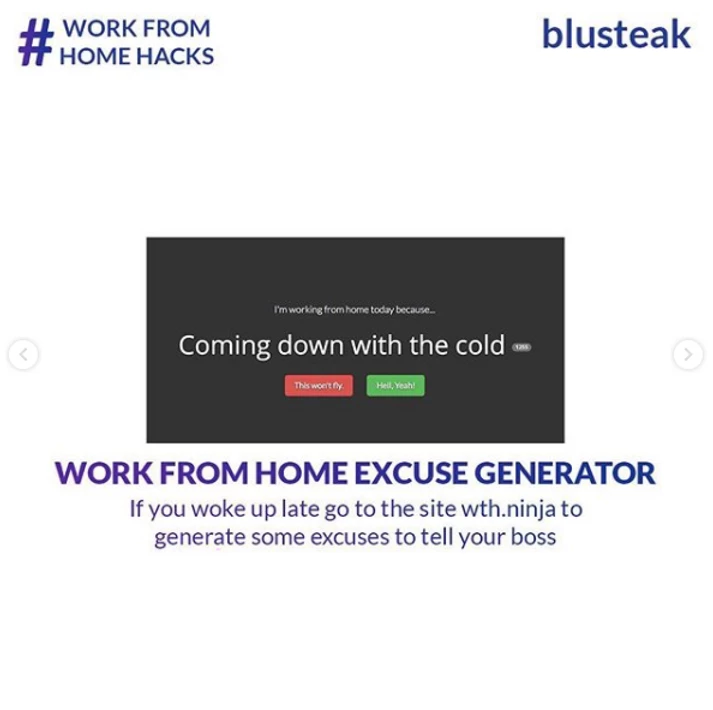

In light of the Coronavirus outbreak, many businesses had to shut down
their offices and had to resort to work from home measures. Although
this is a necessary safety measure, the businesses cannot expect to have
the same level of efficiency while employees are working from their
homes. This may be due to several communication problems or certain
network issues which the employees might face. In such situations, the
employees can make use of certain tools available online to ensure that
they could perform their jobs efficiently from their homes, Some of
these are:
1)
Microsoft Teams
- It is a useful tool which enables its users to set up Teams and chat
and communicate within these teams. If users need face to face
conversation, then they can jump straight into voice or video chats with
other users with a single click. Microsoft Teams is integrated with
Microsoft Office Services such as MS Word and MS Excel.
2) Drawpile - This is a multimedia app which allows its users to draw on a single canvas simultaneously. Multiple users can use the canvas at a single time. The drawpile is a simple little graphics design tool having a built-in server by which different users can access the canvas at the same time.
3) Firewalla - Itis a powerful firewall that connects to the router and protects our devices from cyber attacks. It safeguards our personal and business data. It is a useful device in public and home networks to ensure maximum protection from viruses and network attacks.
4) Snapchat - Bored at home? Well, Snapchat has got you covered. Snapchat is a multimedia app which allows you to easily talk with friends, view live stories and discover the latest news. You can send snaps to your friends which will only last for about 10 seconds and then disappear or send Stories which lasts for 24 hours.
5) Range Extender - WiFi's in homes usually have a limited range. One may not get a network connection when they are in a different room away from the Wifi. When you are doing your office work from home, you need a really good network connection. To get good connectivity, we can use a Range extender. Range extender helps to keep your devices connected in every room. It provides you with a fast, reliable connection and expanded coverage in every corner of your home.
6) Work From Home Excuse Generator - Suppose you woke up a little late for work. You look at the clock and you realised that your office has started. You know that you can't reach there on time. What do you do? Well, go to the website wth.ninja. This site provides you with a variety of excuses which you can use to present to your boss thus enabling you to Work From Home.

Thank you for reading, hope you have a fun time working from home :)
Looking for more? Get the
complete remote work playbook here
[About the author: Sebin George, Digital Marketing Executive at digital
marketing agency,
Blusteak
.]
 +91 77366 95526
+91 77366 95526
 info@blusteak.com
info@blusteak.com